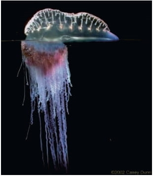
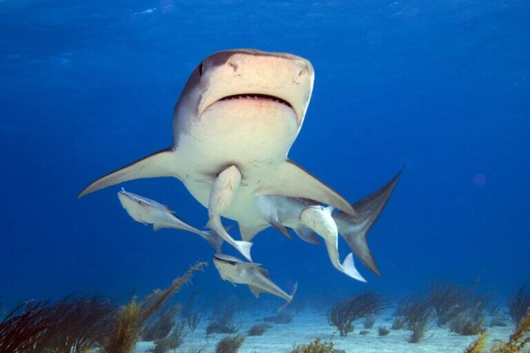
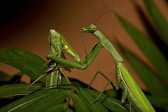
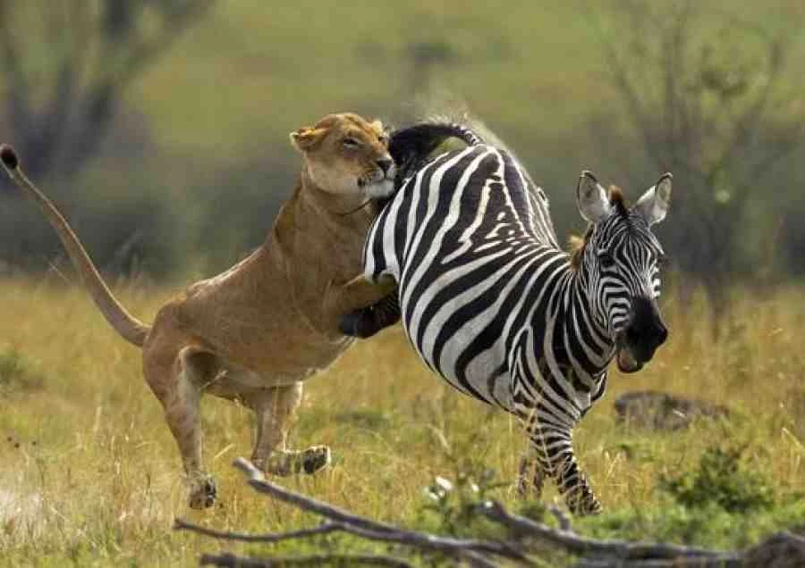
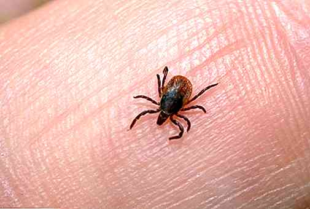
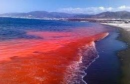
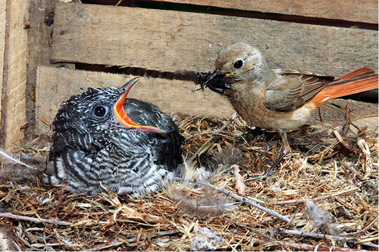
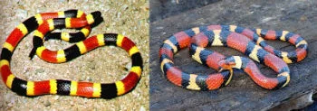
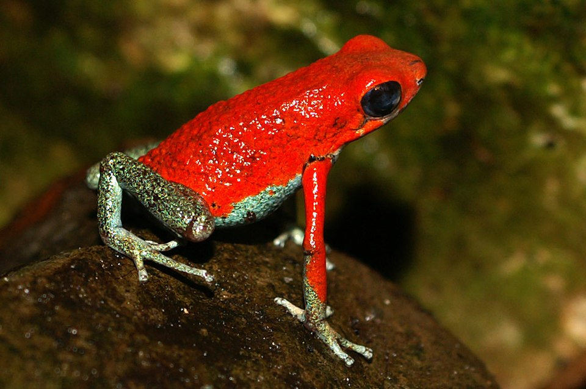

Relações intra-específicas harmônicas
Colônia
A colônia é uma relação intra-específica harmônica onde um grupo de
organismos da mesma espécie vive fisicamente unido e interdependente,
beneficiando-se mutuamente na busca por sobrevivência.Exemplo: corais, caravelas (como a Physalia physalis), algas do gênero Volvox.

Sociedade
A sociedade é uma relação ecológica intraespecífica em que os organismos
vivem em grupos organizados de forma cooperativa, sem estarem ligados
fisicamente.Organismos da mesma espécie, organizados em grupos com divisão de trabalho.

Relações inter-específicas harmônicas
Mutualismo
O mutualismo é um tipo de relação ecológica onde duas espécies diferentes
interagem e ambas se beneficiam da associação, no qual uma não
sobreviveria sem a presença do outro. Exemplo: líquen (associação entre fungo e alga), ruminantes e bactérias do intestino.

Protocooperação
A protocooperação é a associação entre indivíduos de espécies diferentes em que ambos se beneficiam, mas a existência não é obrigatória. Exemplo: peixe-palhaço e anêmona, pássaros que limpam crocodilos.

Comensalismo
É a associação entre espécies diferentes, na qual uma espécie é beneficiada sem causar prejuízo ou benefício a outra.Exemplo: rêmora e tubarão, urubus e restos de animais mortos.

Relações Intra-específicas desarmônicas
Competição Intra-específica
A competição Intra-específica ocorre entre indivíduos da mesma espécie, e é motivada por disputas por território, alimento e companheiro sexual. Exemplo: leões brigando por liderança ou território.

Canibalismo
O canibalismo é uma relação na qual um organismo se alimenta de outro da mesma espécie.

Relações Interespecíficas desarmônicas
Competição Interespecífica
A competição Interespecífica corre entre indivíduos de espécies diferentes. Geralmente ocorre quando duas espécies apresentam sobreposição de nichos ecológicos. Exemplo: leões e hienas disputando carcaças.

Predatismo
O predatismo ocorre quando organismo predadores matam indivíduos da população de presas para deles se alimentarem. Exemplo: lobo caçando cervo, gato caçando rato.

Parasitismo
Relação na qual uma das espécies, o parasita, obtêm nutrientes e moradia no corpo de indivíduos vivos da espécie hospedeira. Exemplo: carrapato no cachorro, tênia no intestino humano.

Amensalismo
O amensalismo, que também é chamado de antibiose, uma espécie denominada inibidora libera substâncias que impedem o crescimento e a reprodução de outra denominada amensal. Exemplo: fungos que liberam antibióticos (como a penicilina), eucaliptos que liberam toxinas no solo.

Esclavagismo
O esclavagismo é uma relação na qual uma espécie se beneficia da outra fazendo com que a outra saia prejudicada.

Formas especiais de adaptação
Camuflagem
Forma de adaptação na qual um organismo se parece com o ambiente, confundindo-se com ele na cor e/ou na forma. Exemplo: bicho-pau, sapo-folha, camaleão.

Mimetismo
Forma de adaptação na qual uma espécie se beneficia por assemelhar-se a outras. Exemplo: borboleta viceroy imita a venenosa monarca.

Aposematismo
Forma de adaptação na qual uma espécie exibe cores chamativas para advertir seus possíveis predadores quanto a seu paladar desagradável ou pelo veneno que possui. Exemplo: sapo venenoso, cobras corais.

Estas são as principais relações ecológicas! Esperamos que este site tenha o ajudado a aprender melhor sobre elas!